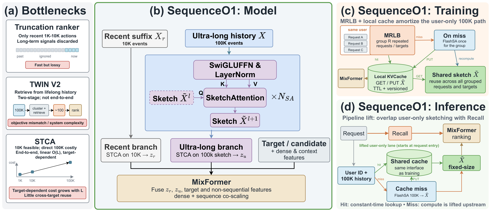
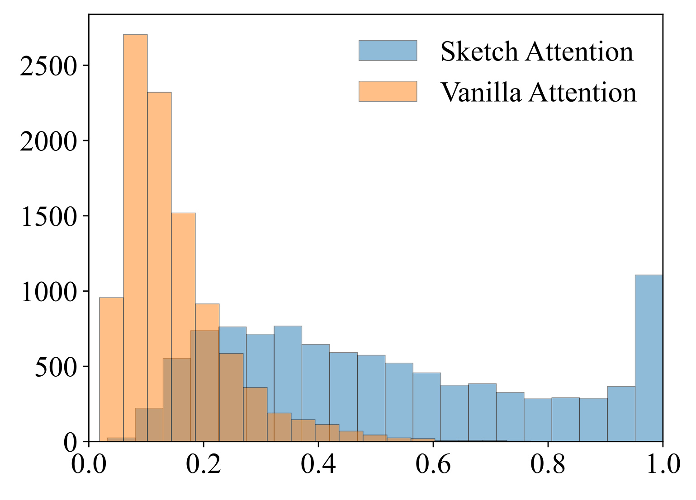
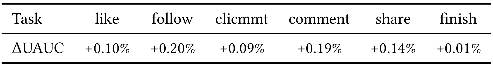
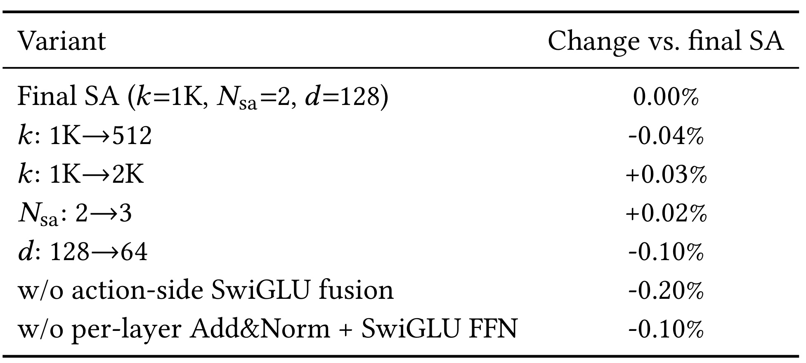
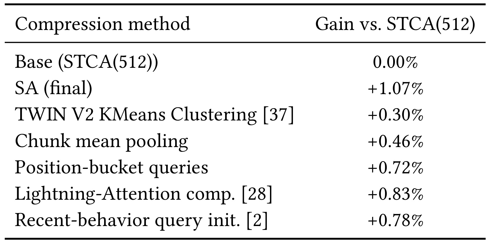
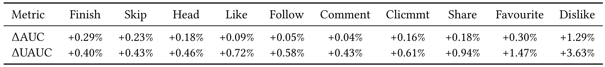
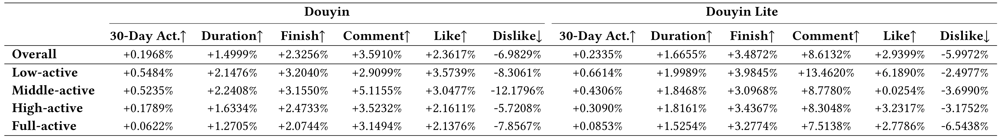
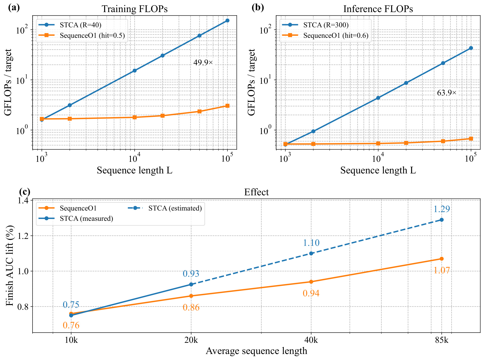

SequenceO1：用可缓存的低秩草图实现端到端十万级用户历史建模
SequenceO1 的英文标题是 SequenceO1: End-to-End Ultra-Long (100K) Sequence Modeling in Recommendation with Low-Rank Caching，由 Lin Guan、Jia-Qi Yang、Zhishan Zhao、Jiaqi Huang 等字节跳动研究者提出。论文于 2026 年 9 月 8 日公开，版面标注 RecSys 2026；本文依据二十页原文及全部附录精读，核验日期为 2026 年 9 月 10 日。论文入口。本轮未发现并核验到本文独立官方代码或项目页。它讨论的核心是：怎样把用户十万次行为压缩成固定大小、可被不同候选和连续请求复用的中间表示，同时保留面向最终排序目标的联合优化路径。
当用户历史扩展到十万级，瓶颈同时出现在训练与服务的特征存储、通信和计算中。截断、多阶段检索与长度外推，要么牺牲端到端建模，要么仍保留随原始历史长度增长的系统成本。
1. 背景和问题
短视频用户的一年消费记录可以累积到十万量级。长历史中包含的并不只是更多重复曝光，还可能有稳定偏好、反复出现的意图与周期性需求。若精排只观察近期几百或几千次交互，一次短暂的兴趣波动就可能遮住更长期的偏好；相反，把过去的行为原样全部送入排序器，又会大幅放大每个样本的输入成本。SequenceO1 所研究的是已经有召回、粗排和特征链路的大型短视频系统中的精排阶段，因此它必须在有限时延中对很多候选视频打分，不能把一次只处理一个长序列的离线能力直接当成线上可部署性。
论文把问题拆成存储、通信、计算三个同时发生的负担。首先，长序列特征与嵌入增大训练样本和缓存占用，同一用户的相近请求可能反复携带几乎相同的历史。其次，原始行为必须从特征系统移动到训练或推理设备，主机与加速器之间、分布式节点之间的数据搬运随之增长。最后，注意力与前馈变换才开始消耗算力。因此，哪怕把注意力从平方复杂度降到线性复杂度，只要每个请求仍要读取和传输十万条记录，系统也未必能容纳。这里的研究对象不是孤立算子，而是“同一份用户信息何时生成、由谁消费、可复用几次”的完整路径。
最直接的控制成本手段是截断。只保留近期一千到一万次行为，可以让服务预算比较稳定，却可能丢失窗口外的长期信号。另一种已广泛采用的路线是先从终身历史做检索或压缩，再让精排在较小集合上建模。本文生产基线采用受 TWIN V2 启发的方案：离线层次聚类将终身行为压缩，聚类后的历史约有一万项，再由通用搜索单元挑出少量与候选相关的记录，交给后续精细兴趣模型。这个方案已经能够利用长期历史，因此它是实质性的强基线；新方法不能仅与完全没有长期特征的系统相比就宣布生产替换成功。
两阶段方案的代价在于，压缩与检索不完全服从最后的排序目标。一个在聚类空间里很相似的行为，未必是区分当前候选最有用的监督信号；被前置模块丢掉的记录，也无法由最终排序器重新选择。维护聚类更新、检索索引、在线特征及对应一致性还会增加系统复杂度。不过，这不意味着两阶段方法总是劣势：它们能把昂贵计算移出关键路径，也更容易明确资源边界。本文真正想回答的是，在相同生产任务上，能否用一个可联合训练的长历史分支替代已有终身模块，并且继续满足成本约束。
另一个相关方向是训练短序列、推理长序列。论文回顾了随机长度采样和稀疏训练、稠密推理的路线，指出已报告的训练与推理长度仍有耦合。例如引言引用的 STCA 训练平均长度约两千到两千五百，服务到一万；引用的 ULTRA-HSTU 平均训练长度约四千四百，推理到一万六千三百八十四。这些数字用于描述既有外推幅度，不是本文重新测得的结果。若同样比例迁移到十万级，训练本身仍须处理可观长度；而服务阶段也依然需要读取很长的原始历史。外推降低某些训练成本，却不会自然消除所有输入搬运和候选相关计算。
STCA 的进展尤其值得辨析。它移除了历史之间的全量自注意力，只保留目标向历史的多层交叉注意力，因此每层对长度呈线性增长。问题是，不同候选产生不同查询，查询与十万条记录的匹配和加权归约需要反复做。附录还对单查询交叉注意力进行了矩阵重排，避免显式生成整段历史的键值投影；这样的优化进一步说明，对照系统并非一个毫无优化的普通注意力实现。然而重排后保留下来的加权交互仍由候选决定，无法像纯用户侧计算那样在很多目标之间共享，线性项依然留在每个候选的路径上。
因此，SequenceO1 选择提前把“用户是谁、长期看过什么”与“当前目标与用户是否匹配”拆开。前半段只使用用户侧信号，把不同长度历史压成若干摘要槽；后半段才加入候选，用更强的模型在摘要上推理。这样做需要满足两个互相制约的条件：摘要必须足够小，才值得缓存、传输和重复使用；摘要又必须保留足够广的历史信息，否则之后看到候选也无法找回被压缩阶段丢掉的信号。原型归一化、动作融合、残差精炼与近期分支，都是围绕这个冲突组织起来的设计，而不是彼此独立的技巧拼盘。
“低秩缓存”也需要按作者附录的限制理解。它指沿长度轴从大量行为得到少量草图向量，参数量不依赖最大历史长度，缓存体积也不再随该长度增长；它没有证明草图严格恢复完整注意力矩阵，更没有继承某个低秩近似定理。类比 Linformer、Perceiver 或集合摘要模型，是为了帮助解释压缩结构。本文与这些方法最相关的差别，是最终压缩结果必须不含候选信息，成为训练与服务都能复用的用户状态。若把目标信息提前注入草图，即使表示质量更高，也会破坏本文最重要的跨目标摊销前提。
最后，标题中的常数复杂度是一个有条件的操作语义：只有固定大小的草图已经可用、缓存命中时，超长历史路径相对于原始长度才是常数成本。缓存未命中时仍要扫描原始历史并计算草图；近期一万条分支、候选处理、融合和其他排序成本也没有消失。论文称已在抖音十万级全流量部署，百万级历史则是面向未来的扩展方向，不能把两者写成同样已经实现的规模。这些限制不削弱缓存设计的价值，反而帮助确定它适合什么负载：用户重复请求多、长期历史变化相对缓慢、下游候选数量多的场景最可能获得摊销空间。
2. 方法
2.1 Sketch Attention：让每条行为向原型分配质量
设用户历史嵌入为 $X\in\mathbb R^{n\times d}$，原始长度最多十万，单条行为包含视频和动作信息；可学习原型为 $P^{(0)}\in\mathbb R^{k\times d}$。原型全局共享，但它们与具体历史交互后得到的草图属于具体用户。首先计算每个原型与每条历史的相似度，再沿原型轴归一化。以下合并原文式六至九保留核心计算：
符号解释：$S\in\mathbb R^{k\times n}$ 是原型与行为的亲和度；$W_Q,W_K\in\mathbb R^{d\times d}$ 为投影矩阵；$i$ 索引行为，$j$ 索引原型；$A$ 是动态分配矩阵；$\widetilde X\in\mathbb R^{k\times d}$ 为草图。分母对原型索引求和，意味着每个行为分配给所有原型的权重之和为一。这里聚合的是 $X$，原文核心式没有另写一个必须使用的值投影，复现时不应凭普通注意力习惯擅自加入。
普通潜变量交叉注意力常对历史位置归一化，即每个原型从历史中“挑选”内容。多个原型可能同时关注少量显著行为，无法保证其他行为进入表示。SA 反过来要求每个行为把单位质量分到不同原型，在候选尚未出现时先维持较广覆盖，把目标选择留给后续 STCA。覆盖约束不等于信息无损：不同记录仍会加权叠加，向量方向可能抵消，稀有兴趣仍可能被强势兴趣淹没；它也没有强制每个原型得到相同质量，不能推导出原型一定多样。附录明确区分了这些数学事实与有待验证的解释。从参数看，原型及投影规模约为 $kd+d^2$，不会像固定长度投影矩阵那样随最大长度继续增加。分配矩阵却是根据当前历史动态生成的，因此一次未命中计算仍依赖原始长度。草图是对历史的加权聚合，不是选择一千条原始行为作为代表，也不自动保持原顺序。论文将其称为隐式长度投影是恰当的；把它称为保序采样或严格低秩注意力近似则会改变方法含义。对于需要精细顺序的信息，后面的近期分支承担了更直接的建模责任。
2.2 Stacked Refinement 与动作侧融合
原始视频标识相同，并不代表其用户含义相同：看完、划走、点赞和关注对应不同反馈。附录给出的动作融合是抽象形式，生产实现还可能包含其他特征变换：
符号解释：$e_i$ 是第 $i$ 条视频的物品嵌入，$a_i$ 是动作类型嵌入，方括号与分号表示拼接；带 SwiGLU 门控的前馈网络把拼接向量映射回物品维度，再与 $e_i$ 残差相加。输出 $x_i$ 才进入历史矩阵。该设计让动作语义在汇总之前影响行为表达；若等到草图完成后才加入动作计数，就无法恢复每条视频与具体动作之间的对应关系。
一次分配聚合后，原型已经包含用户信息，可以再用它查询同一份历史进行精炼。原文式十至十四可组织为如下状态更新：
符号解释：$\ell$ 是精炼层索引，初始 $\widetilde X^{(0)}=P^{(0)}$；$A^{(\ell)}$ 为该层分配；$\overline X$ 是加上历史聚合并归一化后的中间状态；LN 表示层归一化，FFN 为前馈网络。每层仍访问原始 $X$，不是只在第一次压缩后对草图做自注意力。残差保留已有表示，前馈网络提供超出线性求和的容量；最终配置采用两层、宽度一百二十八和约一千个原型。
附录把这个过程类比为“分配责任、重新汇总”的迭代，但没有从概率潜变量目标推导出 EM，也没有单调提高某个似然的保证。它仍由最终排序监督通过梯度下降训练。这里的端到端意味着压缩模块在训练路径中可以被排序目标优化；缓存命中时如何处理旧激活、梯度和参数版本，原文只给出缓存接口与版本约束，没有足够细节让读者复现完整的跨步骤反向传播语义。因此应把可微模型设计与缓存训练实现分开核查，不能因为计算图可微就假定每次命中都等同于当场重算。
2.3 Two-Time-Scale STCA：近期细节与长期草图共同排序
全历史压缩后的草图负责长期信号，最近一万条行为则仍然直接进入 STCA。草图宽度与下游排序模型宽度不同，需要一个线性适配器；候选表示也做相应映射。合并原文式十五至十七：
符号解释：$X_r$ 为最近一万条行为后缀，$x_t$ 为当前候选；$z_r,z_u$ 分别为近期与超长期目标相关表示；$W_A\in\mathbb R^{d\times D}$ 是宽度适配器，与前面的分配矩阵 $A$ 完全不同；$\phi_t$ 映射候选到 STCA 宽度 $D$。适配后的草图长度仍是 $k$，只有宽度改变。两分支最终与目标、稠密和非序列特征融合，生产实例使用 MixFormer，但论文并未要求只能绑定这一骨干。

图二应从中间的模型区读起：十万历史向下进入 SA 多次汇总，左侧近期后缀沿另一条线直接到近期分支，两条分支在候选相关交互之后才汇入 MixFormer。图中的一千级草图并不取代全部行为特征，近期通道始终保留。因此长期压缩损失的一部分可以由近期精确匹配补偿，而长期稳定偏好不需要每个目标都重新扫描十万条数据。上方共享的原型是计算入口，不是用户无差别的最终画像；它经过该用户历史的聚合才成为右侧可以缓存的状态。
右上训练区把同用户多个请求组织起来，先访问带有效期和版本的本地缓存，未命中时才执行一次 FlashSA，并把结果用于组内所有目标。右下服务区又区分了两条时间线：召回在主流程继续运行，用户侧计算在请求入口开始准备草图；命中直接提供固定大小表示，未命中则在召回期间完成尽可能多的压缩工作。这是时序重叠，不是删除未命中计算。图中绿色与橙色路径分别表示命中和未命中，能够看出模型层的候选无关性为什么会改变整个请求的调度。
左侧三类旧方案不是独立实验结果，而是作者概括的设计取舍：截断丢长期信号，两阶段模块存在目标不一致和维护成本，直接 STCA 延长后每目标成本上升。中间模型回应表达问题，右侧系统回应重复工作。读图时还需注意，MixFormer 同时接收目标与非序列特征，所以线上收益属于这个完整生产组合；不能把图中存在的全部提升都拆分归功于单独的原型归一化。两条行为路径也会覆盖部分相同行为，是否产生冗余、怎样学习权重，是融合器的职责，原文没有额外声称它们是严格互斥的时间区间。
2.4 Local KVCache、MRLB、Pipeline Lift 与 FlashSA
缓存只存用户侧草图，键包含用户编号、模型版本、历史时间戳和草图配置；请求特有的近期后缀与候选特征不缓存。训练侧采用三小时有效期并观察到约一半命中，服务侧一小时有效期对应约六成命中。容量淘汰与有效期限制内存及陈旧程度，但这两个经验工作点不是在任何系统都成立的常数。模型频繁更新、历史时间戳变化或活跃度分布不同，都会改变有效复用。复杂度分析保守地只持久化窄草图，宽度适配结果虽然可在组内共享，却不跨组持久缓存。
MRLB 将同一用户的多个请求聚合，超长草图计算一次供多个目标使用，仍按请求处理近期行为及候选，并使用请求感知掩码防止跨请求泄露。复用率 $R$ 指共享用户计算的目标实例数，并非简单等于请求数。Pipeline Lift 则利用用户侧计算不等候选返回的性质，在请求入口启动，与召回重叠。FlashSA 解决另一层瓶颈：朴素实现会把原型乘历史长度的分数和分配矩阵写入显存，十万长度下中间张量很大；融合内核分块计算亲和度、稳定 softmax 统计和汇总，不把整个矩阵落入高带宽显存，并适应不等长批次。
用附录的矩阵乘法口径，SA 与总摊销成本可以写为：
符号解释：$N_{\rm sa}$ 为 SA 层数；$n,k,d$ 为原始长度、草图长度和 SA 宽度；$C_{\rm target}$ 是每目标独立的草图 STCA 交互，$C_{\rm shared}$ 为组内可共享的草图历史前馈变换，$C_{\rm adapter}$ 是宽度适配；$p_{\rm hit}$ 是组级缓存命中率，$R$ 为共享目标数。第一式保留了原始长度的线性项，第二式说明它仅在未命中时发生并由多个目标分摊。softmax、归一化、激活、通信等不在这个 GEMM 计数中，故公式不能直接给出实测时延。
符号解释：$N_{\rm stca}$ 为 STCA 层数，$h$ 为头数，$D$ 为 STCA 总宽度；作者采用四层、十六头、每头六十四维，因而总宽度一千零二十四。第一项来自单查询重排后的目标交互及查询变换，第二项是历史側前馈网络，第三项是窄草图到宽排序空间的投影。把可共享与不可共享部分分开，才能公平解释为何增大复用率后直接 STCA 仍保留长历史交互，而 SequenceO1 把那部分压缩到固定的草图长度。
3. 实验结果
实验必须先分清两个离线环境。机制消融主要使用稠密部分简化后的轻量排序器，以只处理五百一十二长度历史的 STCA 为基线，主要看 Finish AUC；生产离线与线上实验则使用完整排序器，基线是近期一万长度 STCA 加终身 TWIN V2。后者实验删除旧终身模块，换上十万级草图分支。两套结果的基线强度、模型容量和任务口径不同，因此不能把轻量配置的百分比与生产配置直接排列成同一排行榜。以下所有提升保留作者报告的百分比口径，缺少绝对基线时不换算成绝对 AUC 点数。
3.1 归一化：先看分配诊断，再看任务收益

图三横轴是每条行为在归一化权重中的最大值，纵轴是对应频次；蓝色表示 SA，橙色表示普通注意力。橙色主要集中在较小权重，蓝色分布更宽，并在接近一的位置存在明显质量。直观上，SA 中较大的最大值表示这一条行为更集中地分配到某个原型。不过，两种归一化方式的分母完全不同：一个沿原型数归一化，另一个沿十万历史位置归一化。这使得两组数值的尺度本身就不同，不能把蓝色更大写成模型对兴趣更有置信度，也不能由此证明每个原型对应独立兴趣。
原文对此限制说得很清楚，图只是分配方式的描述性诊断。若要验证原型专门化，应额外查看原型之间的相似度、覆盖行为的重叠率或对特定目标的检索质量；这些实验没有在本文完成。对当前论文而言，更有说服力的是保持排序设定不变、只替换归一化机制之后的任务指标。图三帮助确认两个算子诱导不同的分配形态，但“不同”到“对排序更好”之间还需要表一的监督结果承接，不能把可视化印象替代消融。

表一保持十万历史压缩与轻量 STCA 排序设置，列分别是点赞、关注、点击评论区、评论、分享和完播，唯一数据行给出 SA 相对普通注意力的 UAUC 改善：依次为百分之零点一零、零点二零、零点零九、零点一九、零点一四和零点零一。六个目标均为正，说明改变归一化轴并非只针对一个目标调出的局部效果。关注与评论的报告收益更大，完播的幅度很小，读者应保留这种任务差异，不能简单总结成所有任务都大幅提升。
UAUC 是面向用户维度评估区分能力的指标，通常用于减少不同用户基础行为率混在一起对全局 AUC 的影响。这里论文未提供足够细节让人复现用户过滤、加权和置信区间，因此不宜擅自补充确切实现，也不能根据百分之零点零一判断效果一定稳定显著。作者利用这一表支持“原型归一化更适合可复用十万级摘要”，这个结论限定在给定数据和排序器中是合理的；它不能证明 token 维度归一化在所有摘要任务中都逊色，特别是在压缩时已经知道查询的任务中，选择性关注原本就可能是合适归纳偏置。
工程上，表一提供的是一个低耦合验证入口：在现有固定潜变量压缩器中保持表示预算、初始化和下游结构不变，只比较 softmax 轴，再同时观察多个用户指标和训练稳定性。与直接引入完整缓存系统相比，这更容易隔离模型机制的贡献。但实现时必须检查 padding 行为不会错误分配质量，且不能把归一化后最大值当作线上阈值或校准概率。论文提出将草图映射回行为、局部精炼等潜在接口，目前仍未评估，表一也不能替代那些下游能力的检验。
3.2 配置消融：动作信息比继续增大草图更值得先保留

表二的零点是最终 SA 配置，不是没有超长分支的 STCA 基线。最终配置采用一千个原型、两层 SA、宽度一百二十八，对轻量 STCA 基线的 Finish AUC 报告增益为百分之一点零七；表中所有数值描述相对这个最终版本的变化。原型减到五百一十二损失百分之零点零四，增加到两千得到百分之零点零三；层数由两层增至三层只有百分之零点零二。它们更像容量与成本选择的方向性证据，原文也明确没有把这几个很小的正变化解释为独立显著性结论。
对照之下，宽度从一百二十八降到六十四损失百分之零点一零，去掉每层残差归一化与 SwiGLU 前馈也损失零点一零，去掉动作侧融合损失零点二零。动作融合的下降幅度大于单纯把原型减半，提示压缩器必须知道“用户怎样对待这个视频”。只保留视频内容或标识再增加更多摘要槽，不能自动补回反馈类型。残差与前馈消融则说明有用草图不仅靠一个线性加权和：多轮查询更新、非线性容量和训练稳定机制一起影响最终表示。
不过，这张表没有展开组合消融，也未给出全部配置的参数量、算子时延或显存曲线。不能把几项下降简单相加预测一个同时移除多模块的模型，更不能把正负百分比当成严格可加的因果分解。生产保留较小原型数和层数，是作者在收益递减下做出的成本选择，不是通过这一张表证明了一千和两层在所有负载下全局最优。若用户历史长度分布、动作类型或嵌入宽度变化，原型数与层数的最优点也可能移动。
读者可以据此安排复现优先级：先确保动作嵌入在聚合前参与计算，再验证残差精炼与宽度，最后才加大槽位和层数。这样每一步都与表中较强的信号一致。对于稀有动作，尤其应检查样本量与表示是否充分，否则聚合器可能把负反馈和正反馈混在一起。表二并未提供按动作稀疏程度的分层结果，因此这仍是由机制推导出的验证建议，不能写成论文已证实的失败原因。
3.3 压缩方法对照：同样大小不代表同样信息

表三控制所有非基线方案输出一千乘一百二十八的表示，并把它们接入相同轻量排序设定。基础 STCA 的相对增益记为零，最终 SA 为百分之一点零七；受 TWIN V2 启发的 K-means 压缩为零点三零，相邻行为分块均值为零点四六，位置桶查询为零点七二，Lightning-Attention 压缩为零点八三，最近一千行为初始化查询为零点七八。这一排列首先排除了一个简单解释：SA 并非仅靠向下游提供更大的表示取胜。相同输出预算下，汇总规则确实影响了可被排序器利用的信息。
分块均值将邻近位置当作自然单元，位置桶方案也带有局部性假设；SA 允许相距很远但语义相近的行为共同影响同一原型，更符合长期兴趣跨时段复现的可能性。作者因此认为推荐行为不像语言那样强依赖连续局部结构。这个解释有合理直觉，但表三本身没有控制行为排列、打乱实验或不同领域对照，不能把它提升为推荐序列普遍弱局部性的定律。相邻关系仍可能承载会话、因果顺序和近期意图，只是它未必是压缩整个十万历史时最有效的唯一划分方式。
这里还要区分“表三的 K-means 压缩”与完整生产 TWIN V2 系统。前者是固定表示预算下的压缩对照，后者包含检索、特征和排序链路。表三中 SA 与聚类的增益差不能直接称为对完整 TWIN V2 的线上优势。真正回答旧模块能否被替换的是后面的生产实验。近期行为初始化查询也不是完全不含近期信息的对照，因此它的零点七八不能证明“只用长期原型一定比任何近期个性化初始化更好”，它只说明给定初始化方案在这套控制实验里不如最终 SA。
进一步复现时，应同时记录输出预算之外的参数、训练步数、更新频率与压缩计算量。表三主要固定表示大小，没有给出每种压缩器完整的成本匹配曲线。如果某种方法在相同算力下能够扩大表示，它可能获得不同排序。因而目前最稳妥的结论是：在作者采用的同尺寸、同排序器实验中，学习式原型分配比列出的替代压缩方式更有效；这构成模型设计证据，却不替代跨硬件和跨预算的最优性比较。
3.4 完整生产与线上结果：替换已有长期模块后的净收益

表四使用抖音完整生产离线数据，控制组同时拥有近期一万长度 STCA 与终身 TWIN V2；实验组移除后者，改为十万级可训练草图分支。行区分 AUC 与 UAUC，列包括完播、跳过、Head、点赞、关注、评论、点击评论区、分享、收藏和不喜欢，十项指标均报告正向改善。完播 AUC 为百分之零点二九、UAUC 为零点四零；收藏 UAUC 为一点四七，不喜欢 UAUC 为三点六三。这里 Head 的具体业务定义没有充分展开，保留原名称比猜测为某个播放阈值更准确。
这些结果的意义在于，实验不是在空白长期建模能力上增加特征，而是要吸收并超过旧终身模块已经提供的信号。点赞、分享、收藏等偏好相关任务的用户级改善比较突出，支持长期个性化得到增强的解释；但不同目标的稀疏性、用户权重与基础 AUC 各不相同，不能简单按百分比大小给任务重要性排序。尤其“不喜欢 AUC 变高”意味着负反馈预测的区分能力改善，并不等于负反馈行为增加。真正的线上负反馈是否减少，应由表五实际行为方向来检验。
全局 AUC 与用户级 AUC 同时增加，对仅利用用户间基础活跃差异的解释形成一定约束：如果只把高活跃用户预测得更高，未必能同样提高用户内排序能力。不过，缺少绝对 AUC、用户样本规模、时间切分与方差信息，读者无法独立评估增益精度，也无法证明每种用户都获益。全文没有提供可公开复跑的数据和代码入口，因此这些数字的证据等级是作者报告的工业实验，而不是本笔记独立复现。
从落地决策看，旧终身模块被移除是非常重要的设计条件。迁移时应比较“旧模块加新模块”与“用新模块替换旧模块”两种路径，才能分清冗余信号与替代能力；但本文直接支持的是后一种生产替换。如果保留原模块再叠加草图，参数、成本和收益都可能变化，不能用表四推测叠加必然更好。本文也没有单独隔离 MixFormer 对增益的交互作用，因此报告应坚持把这视为所述全生产配置中的净效果。

表五分成抖音与抖音极速版两大列组，每组依次给出三十日活跃、时长、完播、评论、点赞和不喜欢；最后一项箭头向下，其余向上。行包括总体及低、中、高、全活跃分组。作者报告进行了一个月线上部署实验，并在表注称结果均有统计显著性。总体抖音时长提升百分之一点四九九九、完播提升二点三二五六、不喜欢下降六点九八二九；极速版对应时长一点六六五五、完播三点四八七二、不喜欢下降五点九九七二。两个产品不能互换分母，也不能把极速版较大的完播数字写成抖音的结果。
总体活跃增益相对温和，抖音三十日活跃提升百分之零点一九六八，极速版为零点二三三五。分层中低活跃用户的该指标分别提升零点五四八四和零点六六一四，说明长期信息可能帮助重新匹配低频用户；但“帮助重新活跃”是机制解释，表中并没有用户迁移矩阵来证明具体原因。极速版低活跃评论提升十三点四六二零，明显高于总体评论八点六一三二，也提醒读者小基数行为的相对变化可能很大，不能据此推断总体新增评论人数。
跨分组方向整体一致，比只报告总体数字更有参考价值；同时，各行不是可直接平均的独立等权样本。论文没有公开活动分组阈值、分流比例、置信区间、显著性检验方法和多重检验处理，因此本笔记只能把“均显著”保留为作者结论，不自行宣称已经完成统计复核。三十日活跃与一次请求的预测指标也处在不同时间尺度，短期 AUC 和长期活跃之间存在产品反馈循环，不能用离线增益机械换算线上收益。
这组线上证据最适合支持“在两个既有短视频产品中，用草图长期分支替换生产终身模块后，作者观察到消费与偏好行为的共同改善”。它不能单独证明所有改善由缓存造成：缓存主要让新模型可部署，表达收益来自模型与系统的联合变更。要拆开缓存有效期对质量的影响，还需要固定模型、改变陈旧程度的实验。当前表格也没有提供每目标时延、尾部时延或吞吐，线上业务提升与后面的理论算力节约必须分别汇报。
3.5 理论计算量与长度收益：看清被省略的成本和估计值

图一上方两个子图横轴是原始长度，对数纵轴是每目标 GFLOPs，分别采用训练复用率四十、命中率零点五，以及服务复用率三百、命中率零点六。直接 STCA 随长度明显上升，SequenceO1 的增幅较缓。按附录公式，十万长度训练分支由约一百五十二点一三降至三点零四六 GFLOPs，对应四十九点九四倍比值；服务由四十三点零七六降至零点六七四一九，对应六十三点八九倍。无 MRLB、复用率为一并采用训练命中假设时，比值为四十六点八零。三者都是指定工作点下的理论超长分支 GEMM 计数比。
这些比值没有包含共同的近期一万分支、稠密排序器、输入嵌入、动作预处理和最后融合，也忽略 softmax、归一化、掩码及激活的操作费用。缓存减少特征物化和通信的好处同样不计入这里，因此计数既不是端到端时延的上界，也不是完整系统成本的实测值。实际吞吐还取决于批大小、不等长行为、内存带宽和请求排队。直接写成“推理提速六十四倍”会把局部分支理论计算偷换成全系统实测延迟，论文没有提供这样的证据。
下方子图横轴是平均历史长度，分别为一万、两万、四万和八万五千；最后一点对应最大截断十万。SA 的 Finish AUC 增益依次为零点七六、零点八六、零点九四、一点零七，而 STCA 曲线标出零点七五、零点九三、一点一零、一点二九。必须看图例：STCA 的较长两点使用 estimated 虚线，较短部分为 measured 实线。因此常被引用的一点零七除以一点二九约等于百分之八十三，是相对于作者估计的直接扩展收益的保留比例，不是两个十万模型都完成直接测量后的无条件结论。这一比值也仅属于轻量消融，不能对齐生产表四或线上表五。
图一仍然提供有价值的信息：作者在相同轻量路线下观察到增加历史长度继续带来收益，并用成本模型解释为何固定草图能让增长更可承受。但越往长序列方向，压缩损失、估计误差与真实服务成本都更应分别检查。附录的期望成本对未命中概率线性依赖，命中率下降会平滑增加 SA 重算，而不会使草图 STCA 重新直接扫描十万记录；这解释了架构在低命中时仍有固定长度推理的优点，却不保证尾部延迟一定稳定。百万级扩展需要新的历史分布与实测成本证据，不能沿图中曲线直接外推为部署结论。
4. 总结
SequenceO1 最有价值的贡献，是把可缓存性写进模型表示的定义：压缩发生在候选出现之前，输出大小不随原始历史继续增长，随后把强目标交互集中在固定长度草图与近期通道上。这样，模型的结构选择直接决定哪些工作可以跨候选、跨请求复用。原型归一化提供广覆盖的分配约束，动作融合和残差精炼提高摘要质量，缓存、批次聚合与计算前移则决定这一摘要能否以合理成本进入生产。本文生产替换实验比单纯和短序列弱基线比较更有说服力，但机制、业务与系统效率仍必须使用各自证据。
附录的误差拆解也提供了一个实用的诊断方向：
符号解释：$F_{\rm full}$ 是使用完整历史的理想目标预测器，$F^\star_{\rm comp}$ 是在选定假设类中仅使用压缩表示能达到的最佳预测器，$\widehat F$ 是实际草图加推理模型；各项默认在相同用户历史与候选上求值。第一项表示压缩丢掉信息造成的误差，第二项表示下游没有充分利用草图的误差。它来自三角不等式，是概念拆分，不是已证明很小的泛化界。若扩大草图有效而加深 STCA 无效，问题可能偏向压缩；反之可能偏向推理容量，但仍需控制变量验证。
局限首先在于训练缓存的优化语义不充分透明。有效期内参数如何更新、缓存激活如何获得梯度、版本何时切换，直接影响端到端训练的精确性和陈旧偏差；原文提供接口设计，却不足以完整复现这些细节。其次，效率证据主要是理论矩阵乘法计算，而缺少完整服务延迟、尾部分位数、吞吐和内存测量；大倍数不应进入没有口径注释的性能汇报。第三，固定草图不可避免会汇总不同事件，长期顺序、稀有兴趣和负反馈是否受损没有专门失败案例，也没有原型多样性的直接验证。第四，工业数据及完整实现未公开，线上统计细节有限，跨平台迁移性尚待独立检验。第五，百万级历史与由草图反查行为、局部精炼都属于未来方向，不能作为本轮已兑现能力。
后续最值得做的第一件事，是在自身数据上保持排序器和表示预算不变，复现归一化轴、动作融合与槽位容量的控制实验，并同时报告用户级、多任务和稀疏兴趣分层结果。这样可以先确认压缩机制真的有效，再承担缓存系统迁移成本。第二件事是绘制命中率、有效期、模型更新频率与预测质量之间的联合曲线，明确哪些事件触发失效，并检查历史时间戳与请求时间，避免同用户聚合引入未来信息。第三件事是用真实批次和服务请求评测缓存命中、未命中两条路径，分别测通信、草图、适配器、STCA 与整体尾延迟；同时保留请求复用分布，避免仅用平均复用率掩盖低活跃用户的重算成本。
对于容量继续扩展，作者提出层次或多分辨率草图以及按用户和行为模式分配容量，这些方向与当前固定预算的局限相吻合。我的判断是，应先检查新增历史究竟带来稳定偏好还是更多噪声，再决定扩大槽位、加入时间层次或保留特定稀有行为通道。每一种改动都可能削弱缓存共享条件，尤其目标相关的二次检索要明确发生在缓存之前还是之后。长期历史建模最终需要同时回答“保存了什么”和“复用了什么”；本文给出了一个有生产证据的组合，但其可迁移价值要通过这两条轴分别验证。